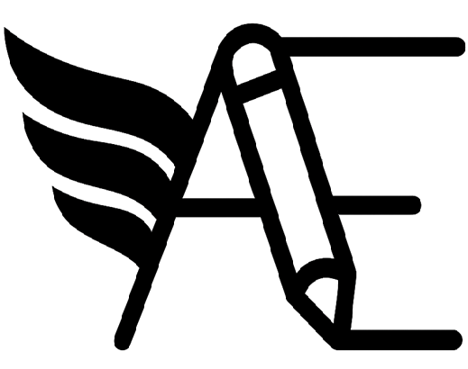

Avro Editor
v0.1.0
[0/0]
❔
Toast!
Visual Guide — Schema Colors
The tree uses color-coding to help identify type categories:
Primitives
(blue) — Scalar types: int, string, boolean, bytes, etc. Can have logical types (date, timestamp, decimal, uuid).
Complex Types
(brown) — Structured types: record, enum, fixed, array, map. Allow nesting and composition.
Unions
(gold) — Choice types: field can be multiple types. Useful for optional fields or polymorphism.
Keyboard Shortcuts
Navigation
↑/↓
or
j/k
— move focus
←/→
or
h/l
— collapse/expand
Home/g
— first node
End/G
— last node
Space
— toggle expand
Enter
— open details for editing
Actions
a
— add sibling field
d
/
Delete
— remove node
c
— copy node
m
— move field (target picker)
r
— replace type (focus type select)
F2
— rename (focus name input)
u
— undo
Ctrl+R
— redo
Search
/
or
Ctrl+Shift+F
— focus search
n/N
— next/prev match
Esc
— clear search / cancel move
Prefix
n:
name,
t:
type,
p:
parent,
ns:
namespace
File Operations
Ctrl+?
— toggle this help panel
Ctrl+Z
— undo
Ctrl+Shift+Z
— redo
Ctrl+Shift+O
— open file
Ctrl+Shift+J
— toggle JSON editor
Ctrl+Shift+C
— copy schema to clipboard
Ctrl+Shift+E
— export .avsc file
Source Code
https://github.com/onereallylongname/avro-editor-static-web
Select a node to see details